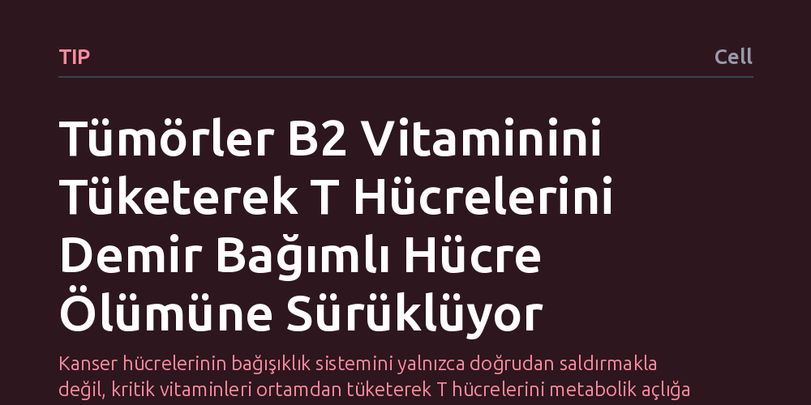

TIP · Cell · 2026-10-08
Araştırmacılar, tümörlerin bağışıklık sisteminden nasıl kaçtığını inceleyerek kanser hücrelerinin SLC52A2 taşıyıcısıyla B2 vitaminini hızla tükettiğini ve T hücrelerini demir bağımlı ölüme sürüklediğini buldu. T hücrelerinde SLC52A3 taşıyıcısının artırılması ise bu metabolik rekabeti tersine çevirerek antitümör etkinliği güçlendirdi.
Kanser hücrelerinin bağışıklık sistemini yalnızca doğrudan saldırmakla değil, kritik vitaminleri ortamdan tüketerek T hücrelerini metabolik açlığa ve hücre ölümüne mahkûm edip saf dışı bıraktığını gösteriyor.

Bağışıklık sistemimizin en kritik savunucularından olan sitotoksik T hücreleri, vücuttaki kanserli hücreleri tespit edip yok etmekle görevlidir. Ancak tümörlerin oluşturduğu mikroçevre, bağışıklık hücreleri için adeta bir tükenmişlik alanına dönüşür. Tümörün bu savunmayı nasıl kırdığı sorusu uzun yıllardır incelenirken, araştırmacıların odak noktası son dönemde metabolik rekabete kaymıştır.
Kanser hücreleri yalnızca bağışıklık sistemine doğrudan kimyasal sinyallerle fren yaptırmakla kalmaz; aynı zamanda hayatta kalmak için gereken temel besinleri de tüketir. Ortamdaki şeker, amino asitler ve vitaminler gibi hayati moleküller kısıtlı olduğunda, T hücrelerinin işlevini sürdürüp sürdüremeyeceği sorusu kanser immünoterapisinin başarısı açısından belirleyici hale gelmektedir.
Hücre zarında besin maddelerinin içeri girişini kontrol eden yüzlerce taşıyıcı protein grubu (çözünen madde taşıyıcıları ya da SLC ailesi) bulunur. Araştırmacılar, T hücrelerinin hangi taşıyıcılara bağımlı olduğunu ve tümör hücrelerinin bu mekanizmada hangi açıkları kullandığını anlamak için geniş kapsamlı bir CRISPR genetik tarama yöntemi kullandı.
Bu tarama sayesinde hücrelerin tek tek genleri susturularak hangi taşıyıcının eksikliğinde T hücrelerinin işlevini yitirdiği ve hangi taşıyıcıların tümör büyümesinde öne çıktığı sistematik biçimde test edildi. Bu deneysel yaklaşım, vitamin alımında rol oynayan özgül proteinlerin işlevsel haritasını doğrudan laboratuvar ortamında ortaya koydu.
Elde edilen bulgular, T hücrelerinin B2 vitamini (riboflavin) alımı için SLC52A3 adlı taşıyıcıya bağımlı olduğunu gösterdi. Buna karşılık kanser hücreleri, SLC52A2 adlı farklı ve baskın bir taşıyıcıyı devreye sokarak ortamdaki sınırlı B2 vitaminini T hücrelerinden çok daha hızlı bir şekilde kendi içine çekiyordu.
B2 vitamininden mahrum kalan T hücrelerinde hücre içi antioksidan dengesi bozuldu ve demir birikimiyle tetiklenen özel bir programlı ölüm türü olan ferroptozis başladı. Yani kanser hücreleri, T hücrelerine doğrudan saldırmadan, onların vitamin kaynağını tüketerek hücre zarlarının hasar görüp parçalanmasına ve bağışıklık yanıtının çökmesine yol açıyordu.
Araştırmacılar bu ölümcül dengesizliği tersine çevirmek amacıyla T hücrelerinde genetik müdahaleyle SLC52A3 taşıyıcısının miktarını artırdı. Bu müdahale sonucunda T hücreleri, tümörün B2 vitaminini tüketme baskısına direnç göstererek vitamini başarıyla almaya devam etti.
Vitamin alımı korunan T hücrelerinde ferroptozis engellendi ve hücrelerin tümörle savaşma kapasitesi belirgin şekilde arttı. Bu sonuç, bağışıklık temelli kanser tedavilerinde yalnızca standart kontrol noktası moleküllerine odaklanmak yerine, hücresel metabolizma ve vitamin taşıyıcılarının da yeni bir hedef olabileceğini göstermektedir.